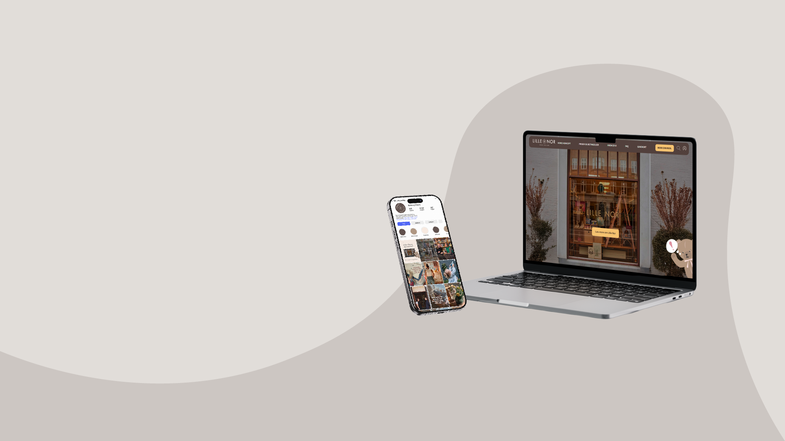
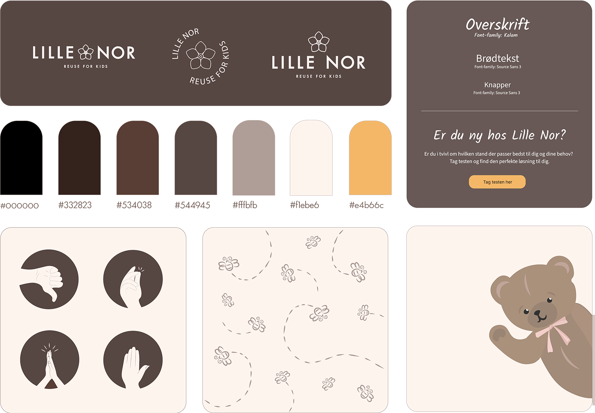
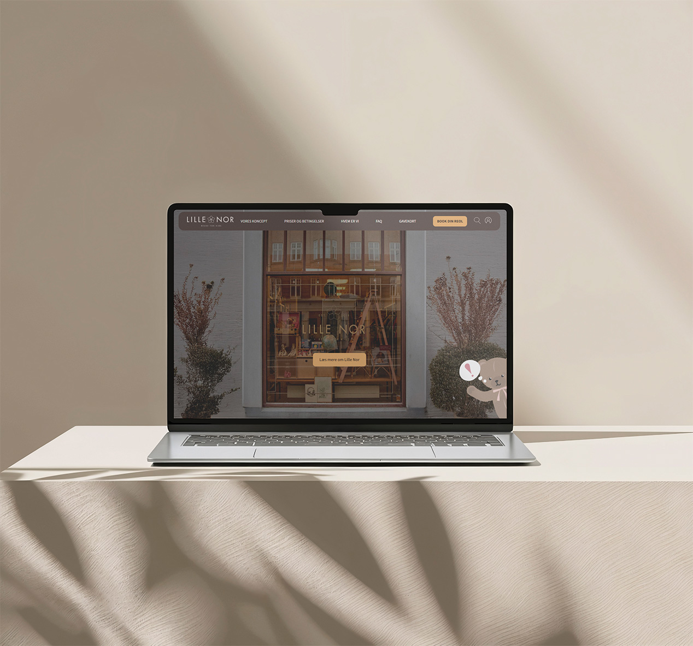
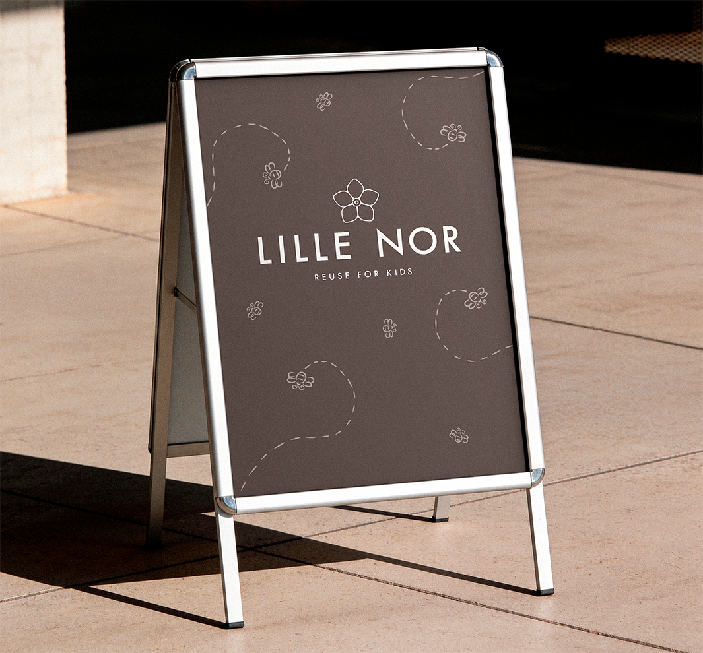
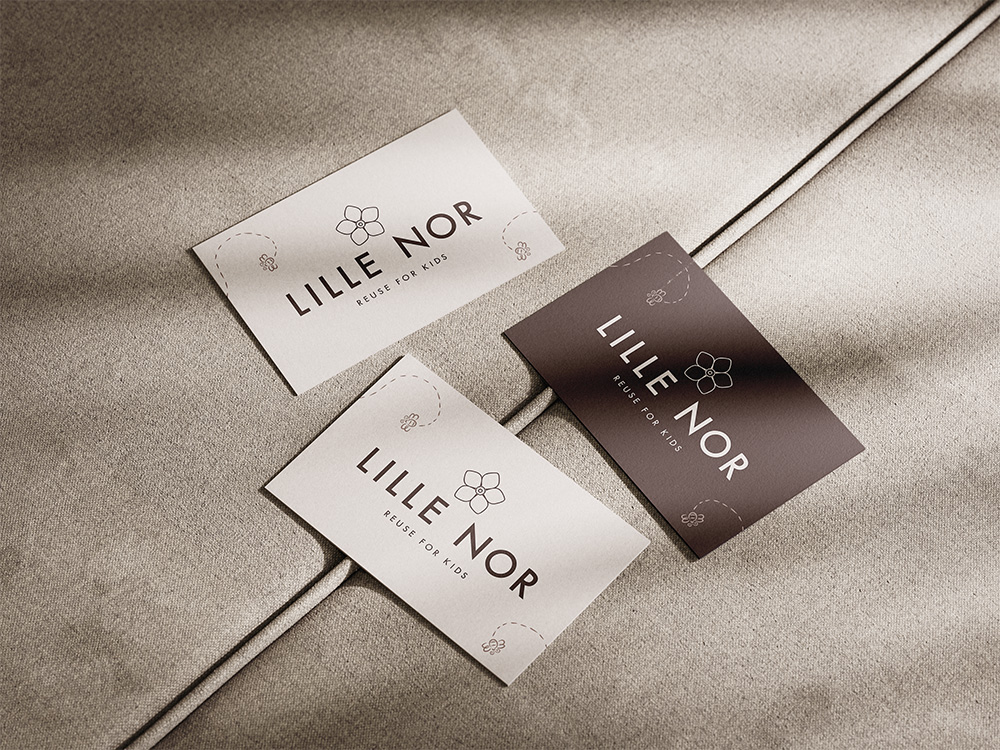
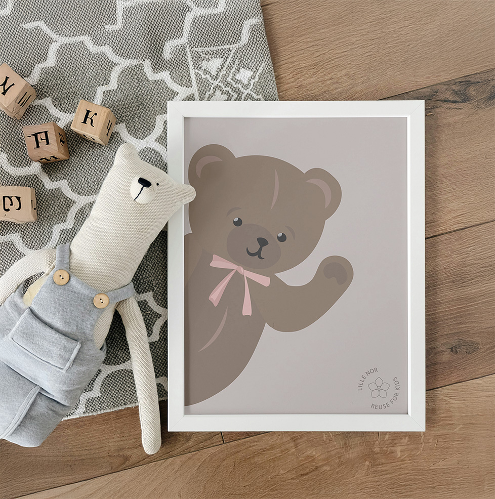
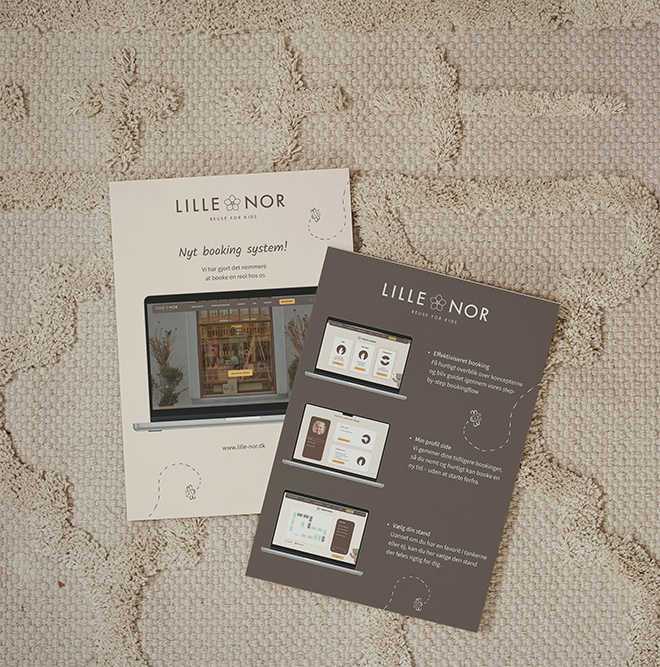
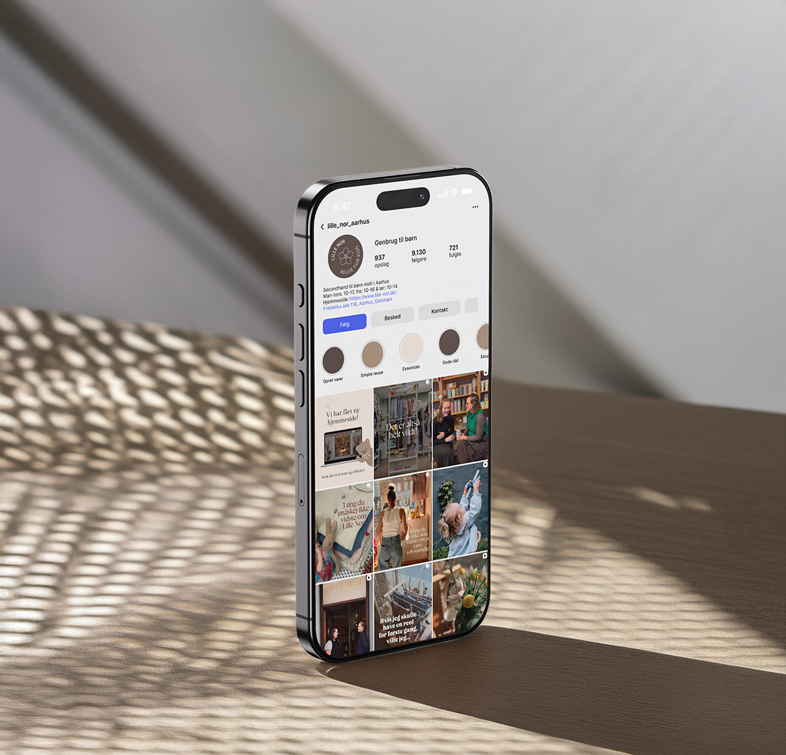
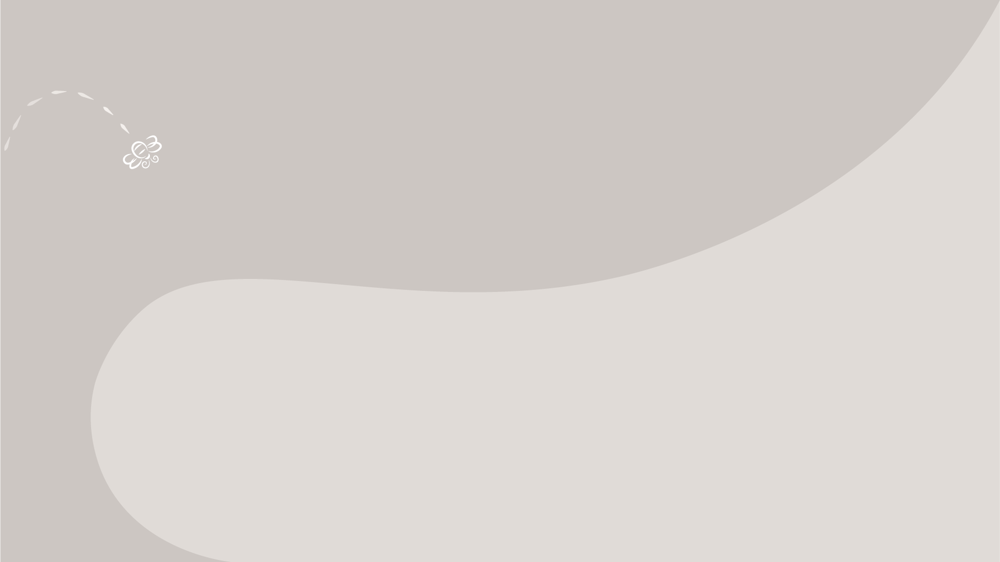
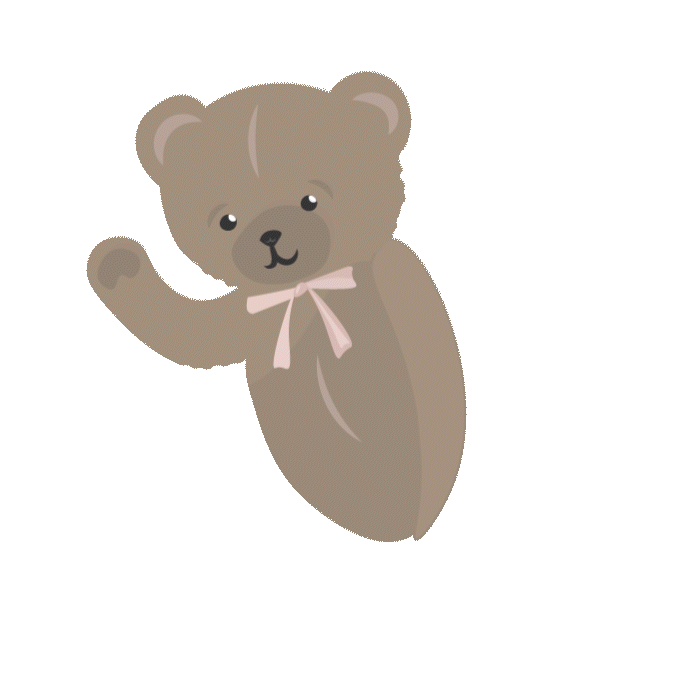

Projektbeskrivelse
Lille Nor er en charmerende secondhand-butik i Aarhus C med fokus på brugt børnetøj til alderen 0-8 år.
I vores projekt arbejdede vi med at optimere butikkens bookingflow og styrke den visuelle identitet,
så den i højere grad afspejlede både univers og målgruppe.
Jeg havde ansvaret for udviklingen af de enkelte grafiske elementer, som er designet på baggrund af værdiordene
nærværende, æstetisk, organisk, kvalitetsbevidst og legende.
Resultatet ses herunder.
*Klik på billedet for at se prototypen









Designvalg
I udviklingen af den visuelle identitet omsatte vi butikkens værdier
til bevidste designvalg. De varme jordfarver og afrundede former skaber
et trygt udtryk, mens den organiske overskrift og letlæselige brødtekst
balancerer identitet og funktionalitet.
Bien og bamsen fungerer som
visuelle virkemidler, der tilfører en legende dimension og tydeliggør
målretningen mod børn. Samlet set skaber elementerne en sammenhængende
og æstetisk helhed med en klar visuel rød tråd.
Tak for at se med
Alle elementer er lavet i Adobe Creative Suite.